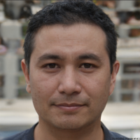

Antoine Germanique
Développeur à ADNEOM, Bruxelles
Mes expériences professionnelles précédentes avaient
été diverses et variées; liées principalement au monde
du graphisme. Ces activités ne m'apportaient pas la
satisfaction et la stabilité que je recherchais.
Après la découverte d'un intérêt pour la programmation,
j'ai décidé de consolider mes connaissances en suivant
la formation développeur de l'AFPA.
Grâce à cette formation, j'ai pu bénéficier d'un
environnement d'apprentissage favorable me donnant accès
à des bases solides couvrant la totalité du spectre du
monde du développement Web. J'y ai également trouvé une
équipe humainement investie dans la réussite des stagiaires.
J'y ai rencontré des collègues de formation dont la
diversité et la motivation m'ont permis d'évoluer.
A l'issue de cette formation, j'ai facilement trouvé un
emploi en Belgique dans un environnement stimulant qui
m'ouvre toujours plus de possibilités pour mon avenir.